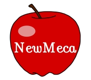
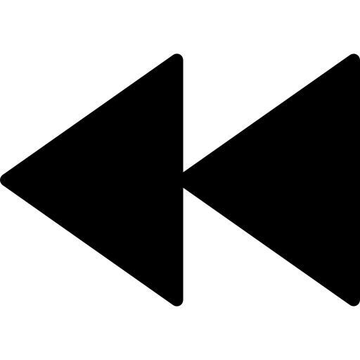
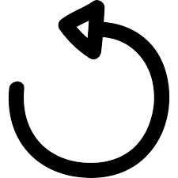
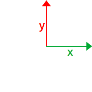
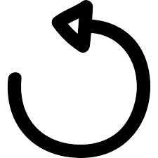
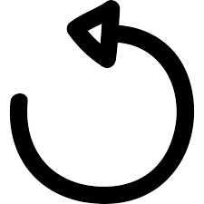

Bienvenue dans le logiciel NewMeca
©2020 Johanna Pasquet
Vous devez choisir la vidéo que vous souhaitez traiter :
Image par seconde (FPS)
Inverser les axes X et Y
Inverser l'orientation de l'abcisse
Inverser l'orientation de l'ordonnée
1. Fixer les axes
2. Fixer une distance
3. Construire la chronophotographie
Tout réinitialiser


Sorry, your browser does not support the <video> element. controls

Exporter en CSV
 
